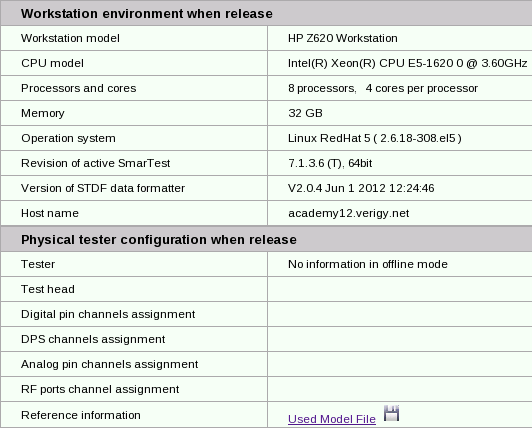

Report for the resource used when generating reports
This report displays the current tester resources and licenses as generating this report.
- System controller environment when release: This part displays the currently used workstation hardware information, operation system, SmarTest revision, and the STDF data formatter revision.
- Physical tester configuration when release (SmarTest online mode only): This part
displays hardware information of the currently used tester and the currently used model
file.
You can view the content of the currently used model file by opening the Used Model File hyperlink in the Reference information row as shown in the following screenshot. Information about the hardware summaries, device channel assignments diagram, tester head, IOCHANNEL details, analog boards, RF boards, and DPS boards is displayed.

Functional changes
- Introduced in SmarTest 7.4.3